행사개요
행 사 명 : 제4회 Univer+City 대학과 도시의 상생발전 포럼
주 제 : 대학과 지역의 상생 발전
기 간 : 2018년 12월 20일(목) 14:00 ~ 17:00
장 소 : 포항공과대학교 포스코국제관 그랜드볼룸
프로그램
2019-03-06
시간
프로그램
환영사 및 축사
14:00 ~ 14:30
개회사 : 김도연 포항공과대학교 총장
환영사 : 이강덕 포항시장
축 사 : 송병기 울산시 부시장, 강철구 경주시 부시장
기조강연
14:30 ~ 15:10
기조강연 : 이광재 여시재 원장
기념촬영
15:10 ~ 15:30
기념촬영
주제발표
(대학. 지자체)
15:30 ~ 16:30
주 제 : 대학과 지역의 상생 발전
발 표 : 포항공과대학교 심재윤 산학처장
울산대학교 이재신 산학지원 부단장
UNIST 신현석 대외협력처장
동국대학교 경주캠퍼스 이영찬 경영학부장
포항시 권혁원 정책기획관
종합토론
16:30 ~ 17:00
좌 장 : 김승환 포항공과대학교 박태준미래전략연구소장
토 론 : 이재영 한동대학교 산학협력단장
김명모 위덕대학교 교수
폐회
17:00
폐회사 : 김도연 포항공과대학교 총장
연사
○ 기조강연 : 이광재 여시재 원장 《일자리를 만드는 지방자치, 시산학(市産學)이 핵심이다》
○ 주제발표 : 심재윤 포항공과대학교 산학처장 《포스텍의 포항시 - 기업 상생협력 프로그램》
울산대학교 이재신 산학지원 부단장 《대학-지자체 상생 발전을 위한 울산대의 노력》
UNIST 신현석 대외협력처장 《울산 지역사회 및 산업경쟁력 기여 방안》
동국대학교 경주캠퍼스 이영찬 경영학부장 《지역대학 활성화를 통한 지속가능 도시발전》
포항시 권혁원 정책기획관 《지역사회가 바라는 대학의 역할》
참석자
이광재 여시재 원장
박치모 울산대학교 교학부총장
조홍래 울산대학교 산학협력부총장
장익 위덕대학교 총장
이대원 동국대학교
경주캠퍼스
총장
김도연 포항공과대학교 총장
이재성
UNIST
부총장
장순흥 한동대학교 총장
한홍수 포항대학교 총장
송병기 울산광역시 경제부시장
강철구 경주시 부시장
이강덕 포항시 시장
김종율 경주상공회의소 국장
서재원 포항시의회 의장
포항공과대학교심재윤 산학처장
포항공과대학교 김광재 기획처장
포항공과대학교 김군역 행정처장
울산대
, UNIST,
경주 동국대
위덕대
포항공과대학교
한동대 산학팀
테크노파크외 다수
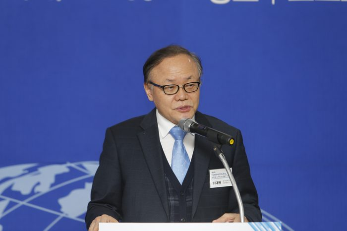
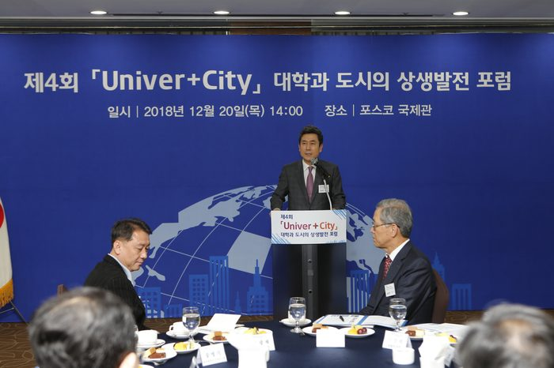
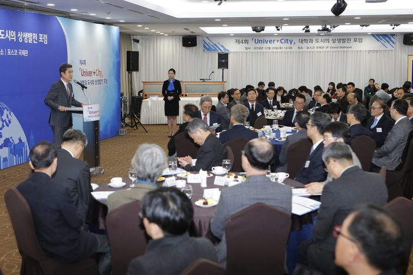
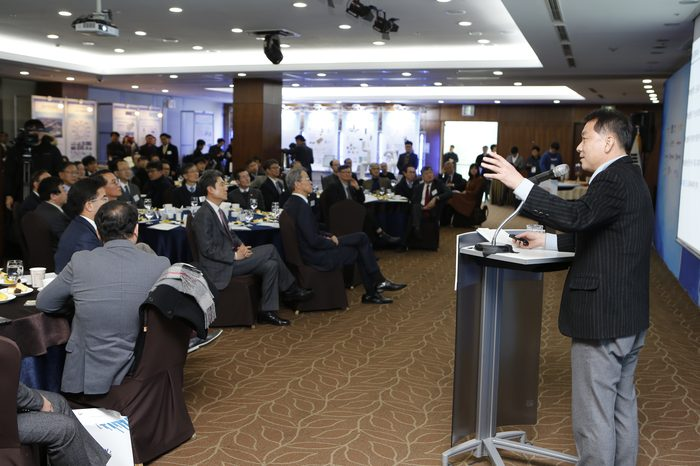
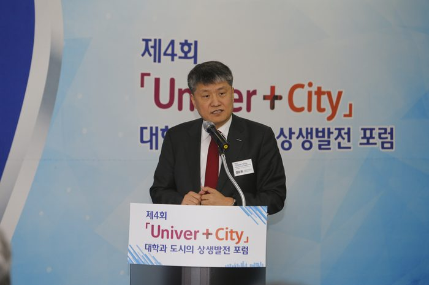
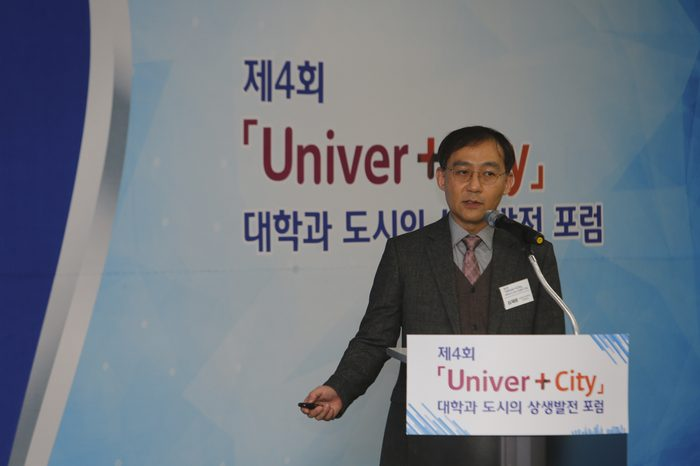
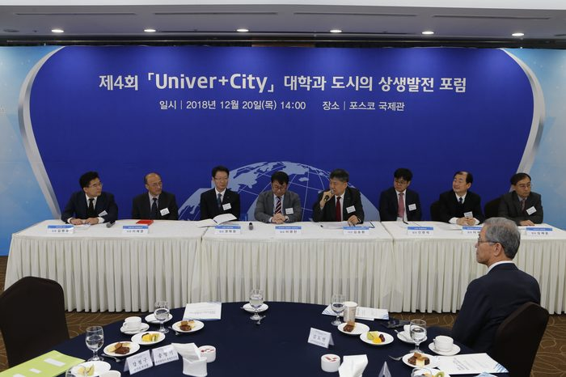
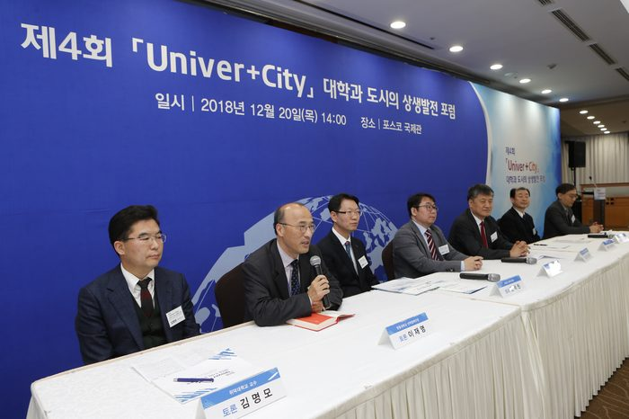
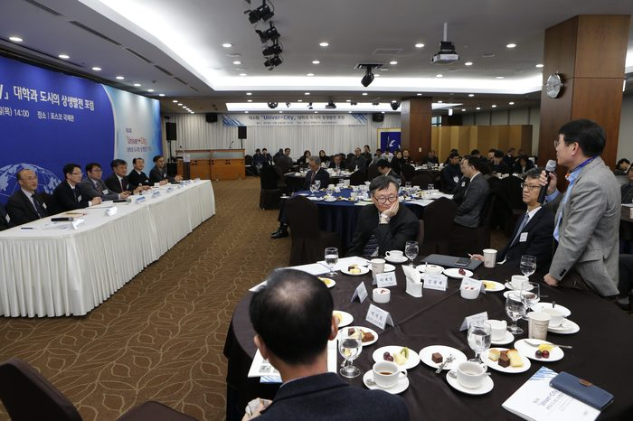
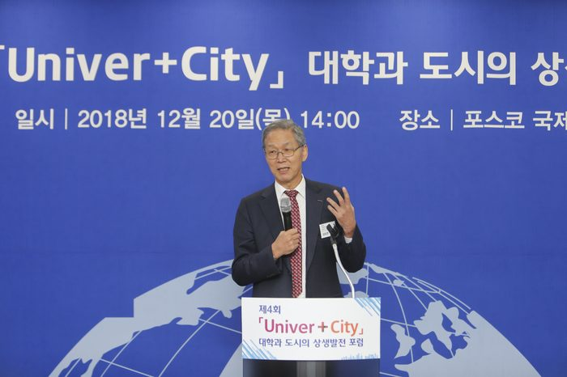
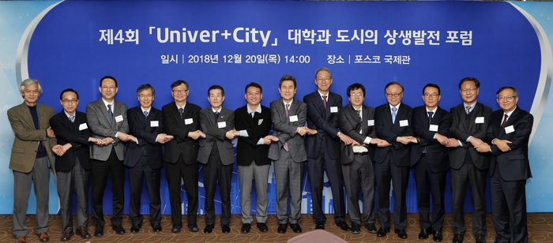